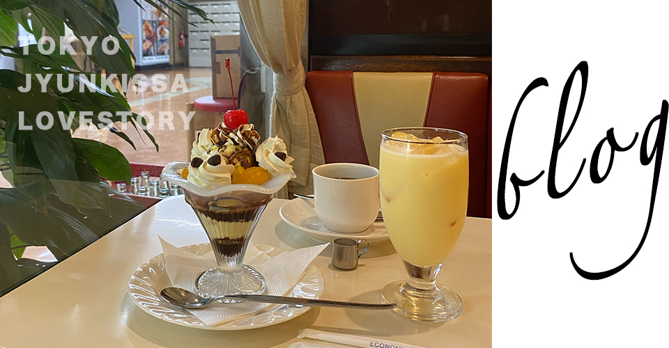
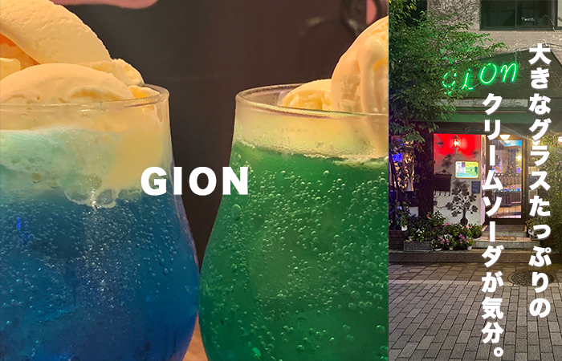

<!doctype html>
<html>
<head>
<meta charset="UTF-8">
<title>純喫茶クラブ</title>
	<script>
  (function(d) {
    var config = {
      kitId: 'ghw1ehb',
      scriptTimeout: 3000,
      async: true
    },
    h=d.documentElement,t=setTimeout(function(){h.className=h.className.replace(/\bwf-loading\b/g,"")+" wf-inactive";},config.scriptTimeout),tk=d.createElement("script"),f=false,s=d.getElementsByTagName("script")[0],a;h.className+=" wf-loading";tk.src='https://use.typekit.net/'+config.kitId+'.js';tk.async=true;tk.onload=tk.onreadystatechange=function(){a=this.readyState;if(f||a&&a!="complete"&&a!="loaded")return;f=true;clearTimeout(t);try{Typekit.load(config)}catch(e){}};s.parentNode.insertBefore(tk,s)
  })(document);
</script>
<link href="css/style.css" rel="stylesheet">
<link rel="icon" href="favicon/favicon.ico" id="favicon">
<link rel="apple-touch-icon" sizes="180x180" href="favicon/apple-touch-icon-180x180.png">
<meta name="viewport" content="width=device-width, initial-scale=1.0, maximum-scale=1.0, minimum-scale=1.0">
<!-- Global site tag (gtag.js) - Google Analytics -->
<script async src="https://www.googletagmanager.com/gtag/js?id=G-6VP4RJ09Q5"></script>
<script>
  window.dataLayer = window.dataLayer || [];
  function gtag(){dataLayer.push(arguments);}
  gtag('js', new Date());

  gtag('config', 'G-6VP4RJ09Q5');
</script>
</head>

<body id="allblog">
	<div class="footerFixed">
	<header>
		<div class="logo">
			<div class="logotoka">
		<a href="index.html">東京純喫茶<br>ラブストーリ-</a>
			</div>
		</div>
		<nav>
		<ul class="global-nav">
			<li><a href="area.html">エリア</a></li>
			<li><a href="allblog.html">ブログ</a></li>
			<li><a href="tokusyu.html">特集記事</a></li>
			<li><a href="profile.html">プロフィール</a></li>
		</ul>
		</nav>
	</header>
	
　　<div id="wrap">
	<div class="content clearfix">
		<!--オールブログスタート-->
		<div class="allblog">
		
			
			<!--コンテンツエリアスタート-->
			<div class="blogcontent">
				
				<a href="blog.html"><div class="allblog_box">
					
					<p>青のボリュームたっぷりクリームソーダが飲めるエモ喫茶、阿佐ヶ谷の秘宝Gionへ行ってみた</p>
					<div class="btn">more</div>
					</div></a>
				
				<div class="allblog_box">
					
					<p>更新予定</p>
					<div class="btn">more</div>
				</div>
				
				<div class="allblog_box">	
					
					<p>更新予定</p>
					<div class="btn">more</div>
				</div>
			</div>
		</div>
	  </div>
　　</div>
	<a href="#" class="gotop"></a>
　　<footer>
	<small>(c)2022 reira-studio.</small>
　　</footer>
	</div>
</body>
</html>
